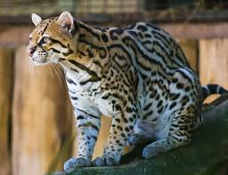
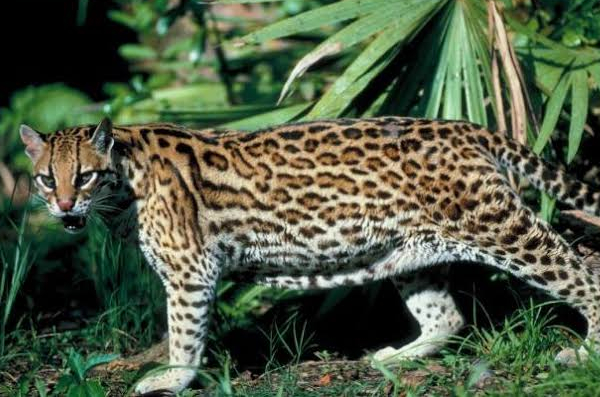
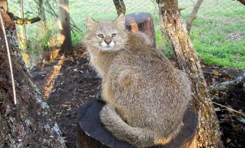
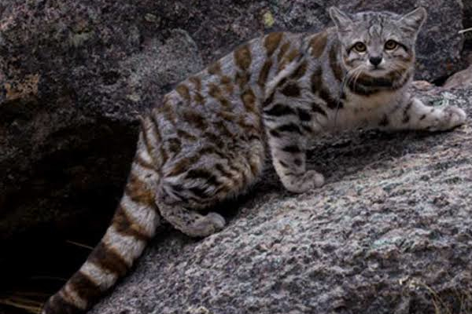
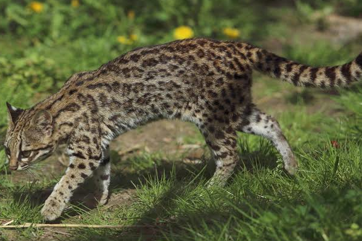
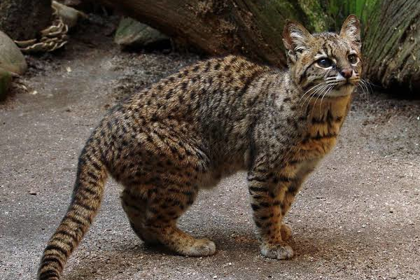
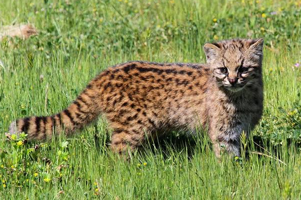
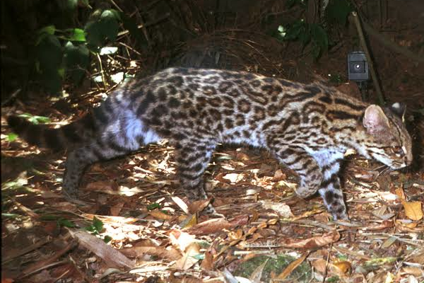

Felidae
Leopardus pardalis (Linnaeus, 1758) - Jaguatirica

Leopardus wiedii (Schinz, 1821) - Gato-maracajá

Leopardus colocolo (Molina, 1782) - Gato-palheiro

Leopardus jacobita (Cornalia, 1865) - Gato-preto-dos-andes

Leopardus tigrinus - Gato-do-mato

Leopardus geoffroyi (d'Orbigny & Gervais, 1844) - Gato-do-mato-grande

Leopardus guigna (Molina, 1782) - Kodkod

Leopardus guttulus (Hensel, 1872) - Gato-do-mato-pequeno
